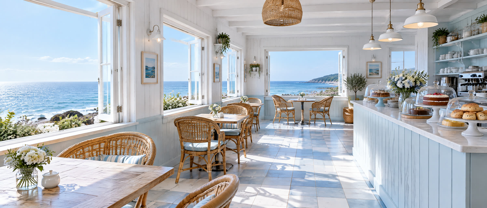
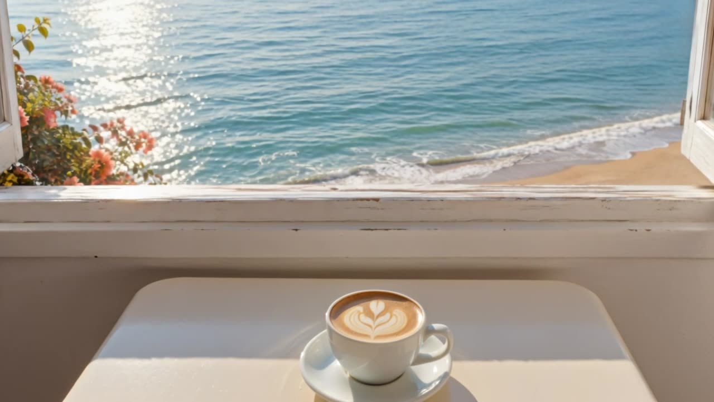

Local crab
Crab sandwich
Brown and white meat, lemon mayo, sourdough.
£9.50Until it is gone
Jess and Kit run Little Tern from an old net loft on the harbour. Everything is made in the back kitchen, and the coffee comes from a roaster four miles up the coast.

Tap something tasty to add it.
Brown and white meat, lemon mayo, sourdough.
Chilli, lime, a poached egg if you like.
Baked at seven, usually gone by two.
Choose from today’s menu. It changes with the catch.
Pay online and pick a time. We pack it in paper, no plastic.
Grab it from the hatch on the harbour wall and head for the sand.
“The crab sandwich on the harbour wall is my favourite twenty minutes of the whole holiday.”Visitor review

Open every day, 8 till 5. Dogs welcome inside. Leave your email for the weekly specials.